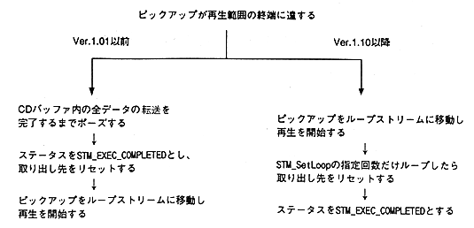

<HTML>
<HEAD>
<TITLE>SEGA SATURN DEVELOPER'S MANUAL</TITLE>
</HEAD>
<BODY bgcolor="#ffffff">
<A HREF=p095.htm> Return to previous page </A> ｜ <A HREF=../mokuzi.htm> Return to menu </A> ｜ <A HREF=p097.htm> Go to next page </A>
<HR><P><P><DL>
<DT> <H4> (2) Operation during loop playback </H4>
<DD> When the pickup reaches the end of the playback range, the operation is different as follows. <BR>
<BR>
∙ The left example program created for Ver.1.01 can be operated in the same way by inserting STM_SetLoop (grp, STM_LOOP_DFL, 1) as shown in the right example, regardless of the above changes. <P>
<PRE>
grp = STM_OpenGrp();                         grp = STM_OpenGrp();
stm = STM_OpenFid(grp, FID1, &key);          stm = STM_OpenFid(grp, FID1, &key,
STM_SetTrBuf(stm, buf, BUFSIZE1);                                      STM_LOOP_READ);
STM_SetExecGrp(grp);                         STM_SetTrBuf(stm, buf, BUFSIZE1,
for (i = 0; i <LOOPMAX;) (STM_UNIT_WORD);
    stat = STM_ExecServer();                 STM_SetLoop(grp, STM_LOOP_DFL, 1);
    if (stat == STM_EXEC_COMPLETED) {        STM_SetExecGrp(grp);
        i ++; for (i = 0; i <LOOPMAX;) {
    }                                                stat = STM_ExecServer();
    user();                                          if (stat == STM_EXEC_COMPLETED){
}                                                          i++;
                                                           STM_SetLoop
                                                              (grp, STM_LOOP_DFL, 1);
                                                     }
                                                     user();
                                             }</PRE><P>
<DT> <H4> (3) Transfer settings </H4>
<DD> Before Ver.1.01, if you set the transfer area → transfer function registration → transfer function deletion, the next transfer destination was the transfer area that was registered first. However, in Ver.1.10 or later, it is necessary to reset the transfer area. Also, the maximum number of transfer sectors and transfer mode will return to the default state. <P>
<DT> <H4> (4) Handling of various files </H4>
<DD> All files on CD-ROM, virtual CD, SIMM and SCSI can be handled with sega_stm.lib. However, the file system library to be linked must be used properly. <BR>
</DL><P><P><HR>
<A HREF=p095.htm> Return to previous page </A> ｜ <A HREF=../mokuzi.htm> Return to menu </A> ｜ <A HREF=p097.htm> Go to next page </A>
</BODY>
</HTML>